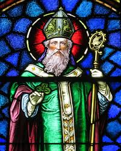
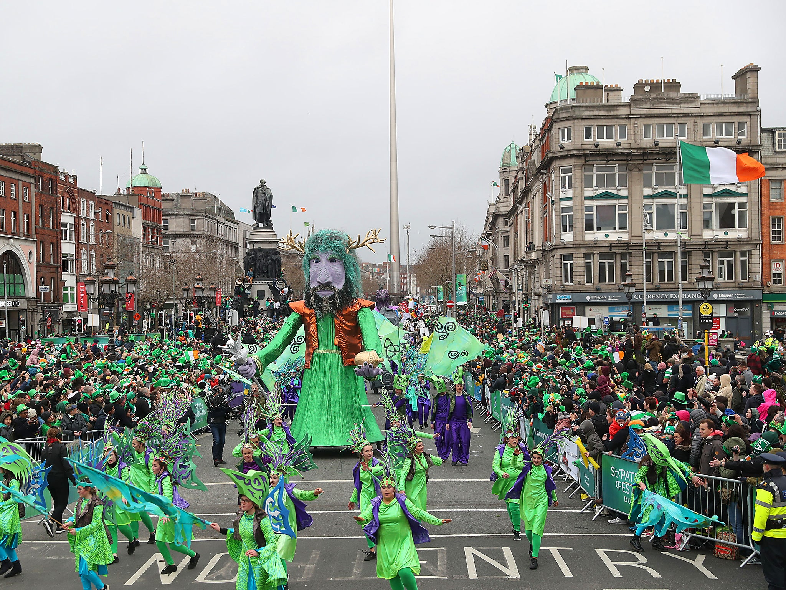

St Patrick's Day
St. Patrick's Day adalah hari raya yang diperingati setiap tanggal 17 Maret. Hari ini merupakan hari libur nasional di Republik Irlandia. Perayaan ini untuk menghormati St. Patrick yang merupakan pembawa agama Kristen ke Irlandia.
Perayaan ini diperingati khususnya oleh bangsa Irlandia dan keturunannya. St. Patrick adalah orang yang memperkenalkan/membawa agama Kristen ke Irlandia. Ia menjelaskan doktrin Tritunggal melalui daun "Shamrock" (khususnya yang terdiri dari tiga helai; daun ini mirip dengan semanggi); karena itu "shamrock" banyak ditampilkan pada perayaan ini beserta dengan warna hijau yang dijadikan lambang negara Irlandia.
Hingga tahun 2006, hari ini tidak hanya dirayakan dalam sehari tapi berlangsung hingga 5 hari. Dilaporkan ada 675,000 orang menghadiri parade ini di tahun 2009. Berbagai acara ikut memeriahkan hari ini. Termasuk konser, teater hingga kembang api.Saat membicarakan mengenai festival perayaan ini, tap dance merupakan bagian penting di dalamnya. Tap dance merupakan tarian tradisional Irlandia dengan gerakan kaku pada tubuh bagian atas diikuti gerakan kaki yang cepat.
